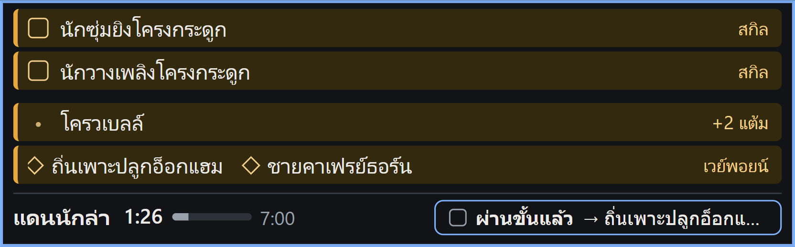
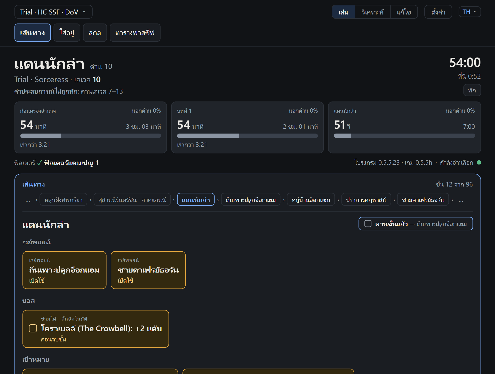
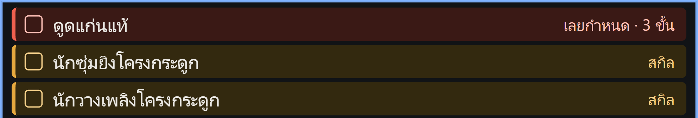
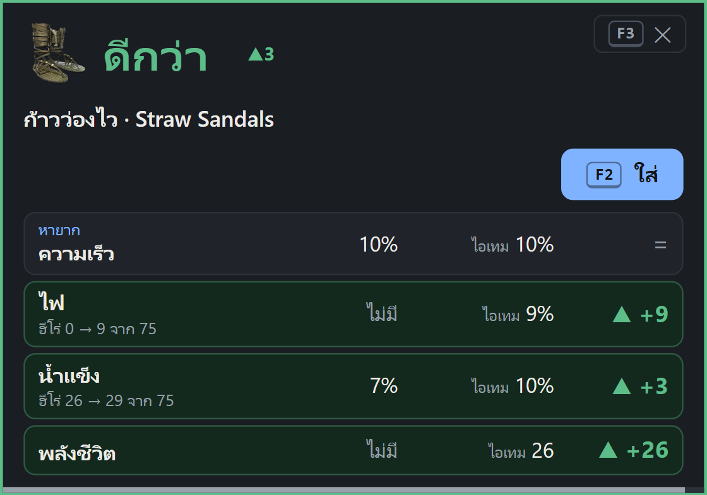
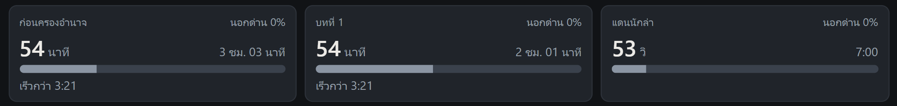
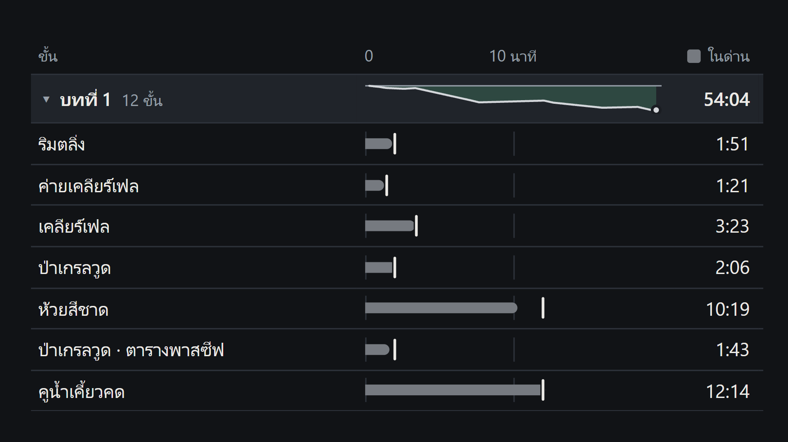
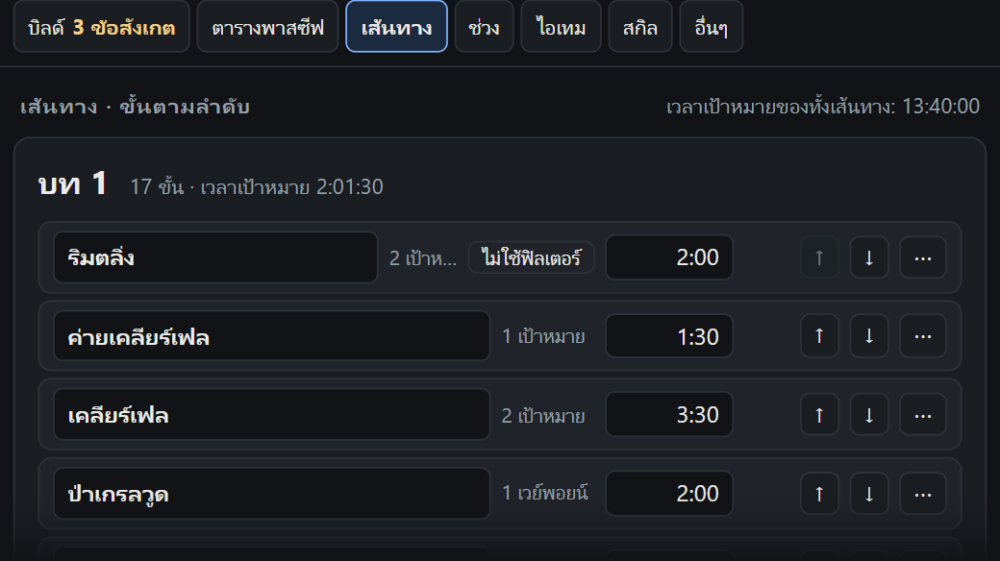

เล่นแบบโปร
ลองผิดลองถูกหลายร้อยชั่วโมง ผู้สร้างแผนทำแทนคุณไปแล้ว Runbook พาคุณเดินตามแผนนั้น: แต่ละด่านต้องไปไหน ฆ่าตัวไหน และเก็บอะไร
ดาวน์โหลดสำหรับ Windowsสำหรับผู้สร้างบิลด์
เวอร์ชันแรกยังไม่ได้เผยแพร่

คุณแค่เล่นก็พอ
พอคุณเข้าด่าน Runbook ก็แสดงให้ดูแล้วว่าในด่านนั้นต้องทำอะไรบ้าง โปรแกรมติ๊กเลเวล รางวัล และโหนดในตารางพาสซีฟให้เอง

บรรทัดแดงไม่หายไปไหน
ผู้สร้างแผนรู้ว่าถึงขั้นไหนต้องเก็บและใส่อะไรไว้แล้ว ถ้าเลยกำหนด บรรทัดนั้นจะเปลี่ยนเป็นสีแดงและค้างอยู่จนกว่าคุณจะทำเสร็จ

ใส่หรือทิ้ง
ชี้ที่ไอเทมแล้วกด F2 ก็เห็นทันทีว่าดีหรือแย่กว่าชิ้นที่ใส่อยู่ เทียบตามค่าสถานะที่ผู้สร้างแผนเลือกไว้

ตามจังหวะผู้สร้างแผน
ทุกขั้นและทุกบทมีเวลาจากแผน เห็นได้เลยว่าตรงไหนคุณเร็วกว่าแผน และตรงไหนช้ากว่า

ข้อมูลวิเคราะห์
ทุกนาทีมีค่า
หลังเล่นเสร็จ หน้า “วิเคราะห์” จะบอกว่าเวลาหมดไปไหน: ตามขั้น ในด่าน ในเมือง และนอกเส้นทาง เทียบกับฮีโร่ตัวก่อน ก็จะเห็นว่าเร็วขึ้นตรงไหน


รู้วิธีที่ดีกว่า?
สร้างแผนของคุณเอง แคมเปญใส่ไว้ให้ครบแล้ว: ทุกด่าน ทุกบอส และทุกรางวัล เพิ่มบิลด์และกำหนดเวลาของคุณเข้าไปได้เลย
PoE2 Runbook
คำถาม
มีไกด์อยู่แล้ว จะใช้ Runbook ไปทำไม
ไกด์ต้องอ่าน ต้องจำ และต้องคอยเทียบกับเกม ส่วน Runbook เดินไปพร้อมกับคุณ: รู้ว่าคุณอยู่ด่านไหน และแสดงว่าตอนนี้ต้องทำอะไร
ไม่มีแผนสำหรับคลาสที่เล่นอยู่ ทำยังไงดี
แผนจะเข้ามาอยู่ในแคตตาล็อกเมื่อผู้สร้างแผนเอามาแชร์ ระหว่างนี้คุณสร้างแผนเองได้: แคมเปญใส่ไว้ให้ครบแล้ว เหลือแค่เพิ่มบิลด์
แพทช์ใหม่ออกแล้ว Runbook จะยังใช้ได้ไหม
หลังแพทช์ต้องใช้ Runbook เวอร์ชันใหม่ ระหว่างที่ยังไม่มี โปรแกรมจะเตือนว่าเกมเป็นเวอร์ชันที่ใหม่กว่า พอเวอร์ชันใหม่ออก กดปุ่มเดียวก็อัปเดตได้
รายการไม่ขึ้นซ้อนบนเกม
เป็นแบบนี้เมื่อเกมอยู่ในโหมด “เต็มจอ”: เกมจะบังหน้าต่างของ Runbook ไว้ ให้เลือกโหมด “เต็มจอในโหมดหน้าต่าง” ในการตั้งค่าของเกม แล้วรายการจะขึ้นมา ถ้ายังไม่ขึ้น ให้ตรวจดูใน “ตั้งค่า” ของ Runbook ว่าเปิด “หน้าต่างซ้อนบนเกม” ไว้แล้ว
Windows ไม่ยอมให้เปิดตัวติดตั้ง
ตัวติดตั้งยังไม่ได้ลงลายเซ็นดิจิทัล Windows จึงไม่รู้จักผู้เผยแพร่ ให้กด “ข้อมูลเพิ่มเติม” (More info) แล้วกด “เรียกใช้ต่อไป” (Run anyway) วิธีตรวจสอบไฟล์ก่อนเปิด
อยากได้ฟีเจอร์ที่ยังไม่มี ขอได้ไหม
ได้เลย นี่เป็นเวอร์ชันแรก โปรแกรมจะพัฒนาต่อไป และรับทุกคำขอ: เขียนมาบอกได้ว่ายังขาดอะไร หรืออะไรทำงานไม่ถูกต้อง เขียนถึงผู้สร้างโปรแกรม · Issues บน GitHub